Un servo cierra los tres dedos a la vez
El AX-18A mueve un piñón 21T que engrana con tres piñones 28T con sinfín, uno por dedo. Los tres dedos cierran juntos y el eje MCP es una varilla M3×74.
AX-18A→Piñón 21T→3 × piñón 28T + sinfín→Falange proximal
● Mecánica
Transmisiones autobloqueantes, yemas intercambiables e impresión 3D en una Bambu Lab A1 mini.
● Diseño mecánico
Todas las transmisiones terminan en un sinfín. Los sinfines son autobloqueantes: una vez cerrado el agarre, los motores pueden apagarse y la pieza no se suelta.
El AX-18A mueve un piñón 21T que engrana con tres piñones 28T con sinfín, uno por dedo. Los tres dedos cierran juntos y el eje MCP es una varilla M3×74.
Cada dedo lleva su motor Pololu con un sinfín que mueve una corona 14T pegada a la falange distal, que gira sobre un buje LM3UU.
Las yemas son de TPU 95A, blandas para mejorar el agarre, y se sujetan a las falanges con 24 imanes N52 Ø6×3. Cada yema aloja un sensor FSR.
El torque del AX-18A se limita al 50–60 % (registro 34). Con el ensamble actual los dedos se tocan en el centro a MCP ≈ +20°, así que ese límite también se fija por software.
● Materiales y manufactura
PLA para la estructura y los engranajes, rígido y preciso; TPU 95A para las yemas. Ejes sobre rodamientos MF63ZZ y bujes LM3UU, tornillería M3. Antes de imprimir se valida una galga de ajustes de 32 minutos.
| Placa | Contenido | Material | Tiempo | Peso | Pausas |
|---|---|---|---|---|---|
| 0 | Galga de ajustes (agujeros de rodamientos, insertos, imanes, ejes) | PLA | 0 h 32 | 10 g | — |
| A | Palma, 3 piñones 28T con sinfín, piñón 21T, acople motor–engranaje, 3 coronas 14T y 3 sinfines PIP | PLA | 9 h 31 | 188 g | — |
| B | Acople UR5e | PLA | 4 h 11 | 127 g | — |
| C | Tapa Dynamixel, 3 falanges proximales, 3 distales y 3 tapas de motor | PLA | 5 h 22 | 105 g | Z 13,4 y 14,8 · imanes |
| D | 3 yemas proximales y 3 distales | TPU 95A | 0 h 52 | 16 g | Z 4,8 y 5,8 · imanes |
| Total | ≈ 20 h 30 | 430 g PLA + 16 g TPU | 24 imanes |
4 paredes, gyroid 40 %, sin soportes. Los dientes salen más finos y resistentes.
Gyroid 40 %, porque lleva toda la carga del brazo.
M3 Ø3,3–3,4, MF63ZZ Ø6,1, LM3UU Ø7,1, inserto Ø4,0, imán Ø6,15 × 3,1; encogimiento del PLA compensado al 99,8 %.
● Prototipo montado
Fotos y videos del proceso: las piezas recién impresas, el ensamble de motores y dedos, y el prototipo funcionando. Toca una foto para verla completa.
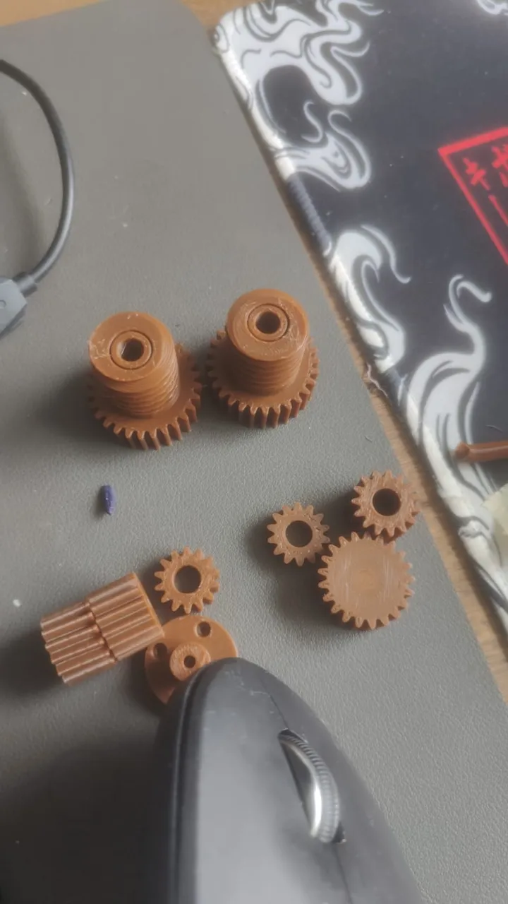
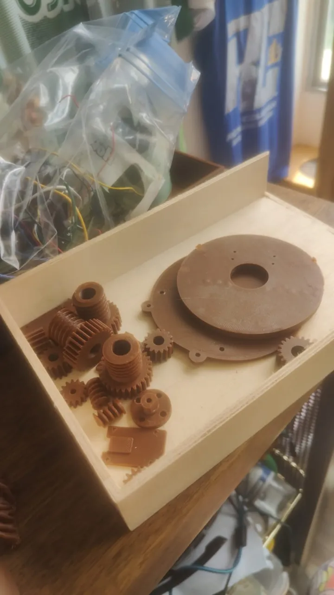
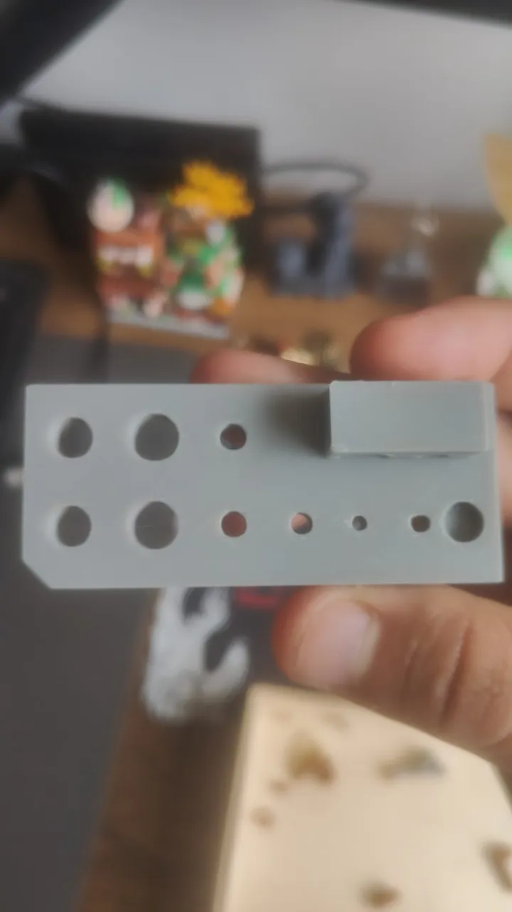
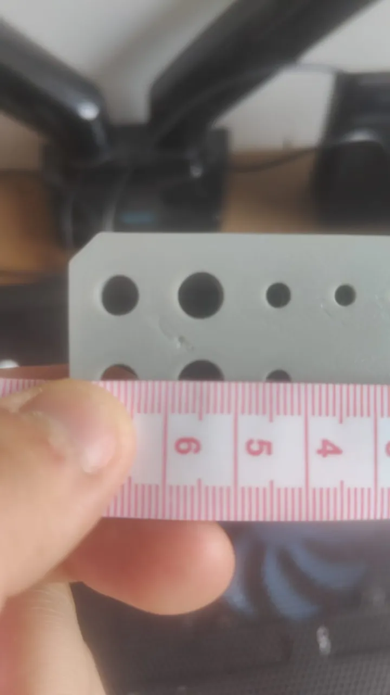
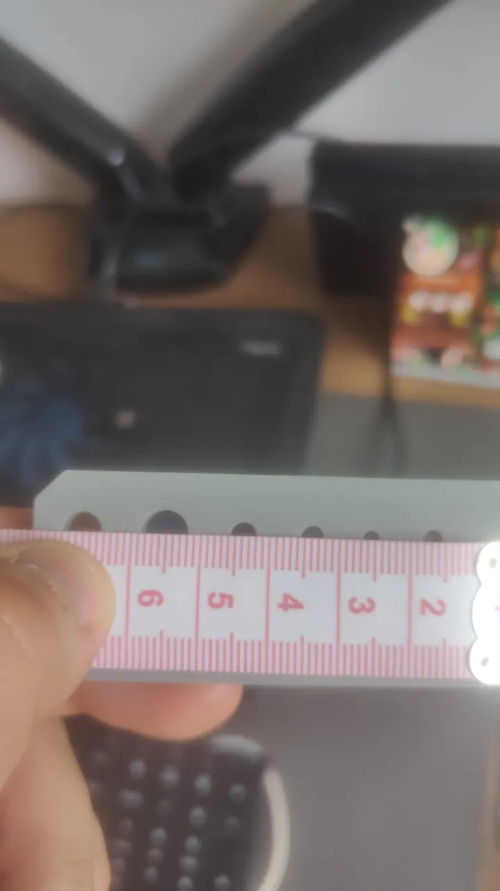
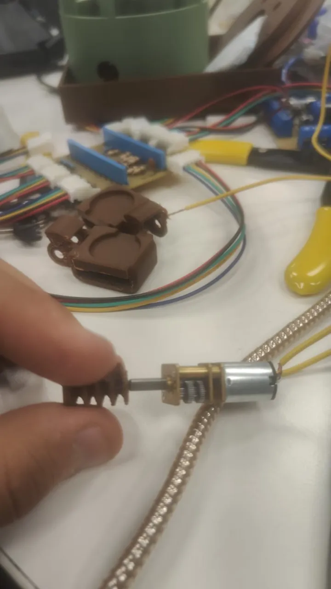
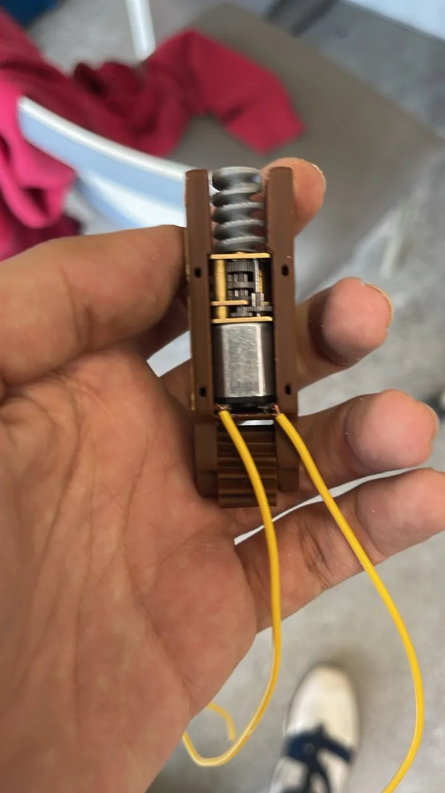
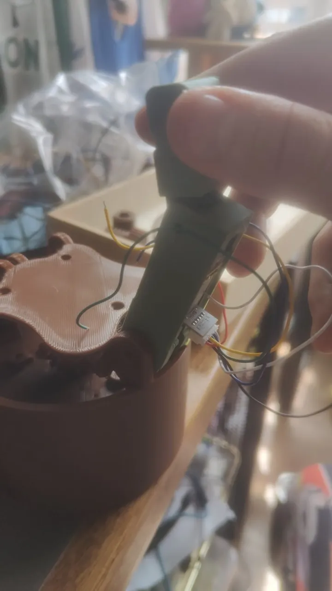
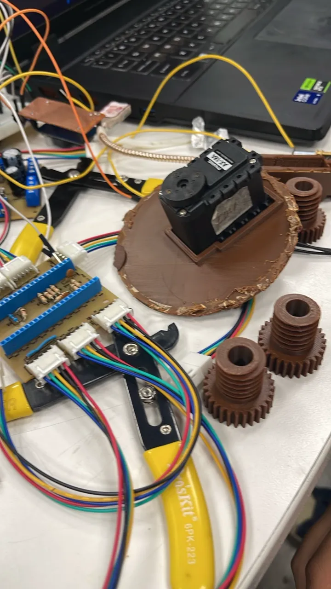
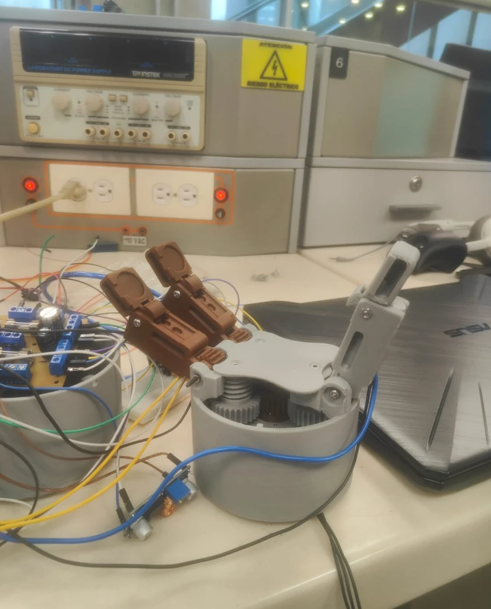
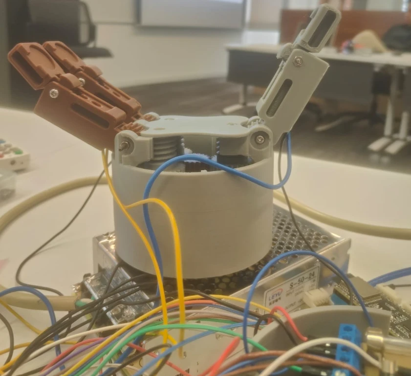